Starting Deployment with AWS Lambda Functions
在这一章中，我们将了解更多关于AWS Lambda的知识，并了解它是如何工作的。我们还将讨论部署Lambda的不同方式，以及在为AWS Lambda开发应用程序时需要考虑的事情。
我们将学习如何设置AWS帐户以及访问管理。我们还将使用AWS Lambda创建一个Hello World函数。
我们将讨论以下主题:
- AWS函数
- AWS帐户入门
- 无服务器框架简介
- 部署AWS Lambda函数
Technical Requirements
本章中的技术要求如下:
AWS Lambda functions
让我们来了解一下AWS Lambda的先决条件，如下所示:
import sys, os
import mylib
...
def handler(event, context):
...
print("Hello world log")
return result
它由以下步骤组成:
- 导入已经安装在AWS Lambda上的库。这包括系统库和许多特定于AWS的库。您不必在包中包含这些库。
- 从其他开发人员和公司或您自己的库导入外部库。您需要将它们包含在您的包中。
- 实现handler函数，该函数处理对作为输入事件和上下文的主变量的请求。event是特定于触发器的信息，context是关于处理请求的Lambda的信息。它包含函数的ID和参数。
- 处理请求。
- 返回result，如果是同步执行，它将被返回给触发器，如果是异步执行，它将被保存到日志中。
你需要记住，除了来自触发器的上下文或状态之外，你不能使用任何上下文或状态。此外，如果在代码执行期间打印某些内容，它将被保存到函数的本地流中。
Pros, cons, and limitations of AWS Lambda
AWS Lambda有一些优点、缺点和限制，如下所述:
- 优点 : AWS Lambda非常容易部署。我们不必了解Docker或其他容器框架来管理它。它应该只包含库和代码。AWS Lambda很容易连接到触发器，这意味着我们可以很容易地将它与各种其他基础设施集成在一起，并且它非常具有可伸缩性，这使得它对于生产部署非常有用。它也相对便宜。
- 缺点:在本地调试各种Lambdas可能很困难。您必须重新创建整个环境和库，并且能够在超时期间检查您的内存消耗。使用AWS Lambda很难很好地估计出产生高峰负载的速度。AWS Lambda是无状态的，它极大地影响了您组织应用程序的方式。这意味着阶段应该来自触发器。
- 限制:内存、磁盘、CPU和超时都有一定的限制，这是你在开发时必须考虑的。
下图详细描述了优点、缺点和局限性:
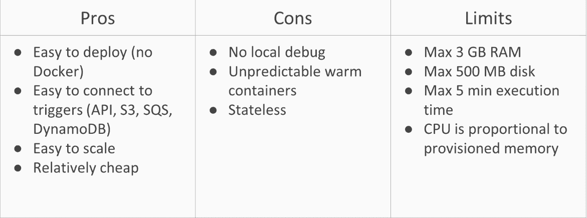
既然我们对AWS Lambda的优点、缺点和局限性有了一个合理的想法，那么让我们来看看创建AWS帐户的基础知识。
Getting started with AWS account
在本节中，您将了解AWS自由层和IAM。我们需要有一个AWS帐户来深入学习。
如果你没有AWS账户，你可以在这里注册:https://aws.amazon.com/account/。
Lambda API网关、简单队列服务和函数是AWS免费层的一部分，因此少量消费不会向您收费。
AWS Free Tier
免费层允许您免费使用AWS服务。它涵盖了许多不同的AWS服务，例如:
- AWS Lambda :这涵盖了100万次调用，这使得Lambda非常适合托管您的宠物项目
- AWS API网关:这涵盖了通过付费网关的100万个请求，因此它可以扩展到具有AWS REST API功能的项目
- AWS SQS :这包括100万个简单的队列服务和请求
- AWS步骤功能:这包括步骤功能的4000个状态转换，这将允许我们创建免费的无服务器工作流
Identity and Access Management (IAM)
您可以为AWS用户创建两种类型的访问权限:
- AWS管理控制访问:这允许您使用AWS web服务。用户需要有一个登录ID和密码，用户将在线使用。
- 编程访问:这允许您使用AWS软件开发密钥。用户需要两个密钥:访问密钥ID和秘密访问密钥。
现在，让我们创建一个具有编程访问权限的用户。它将允许我们使用一个无服务器框架，该框架将管理AWS Lambdas的部署和编排。
为了创建用户，我们将遵循以下步骤:
- 首先，您需要转到AWS仪表板并选择IAM服务，如下面的屏幕截图所示:
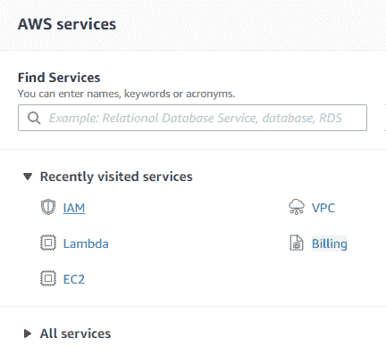
- 接下来，转到用户页面并单击添加用户，如下所示:
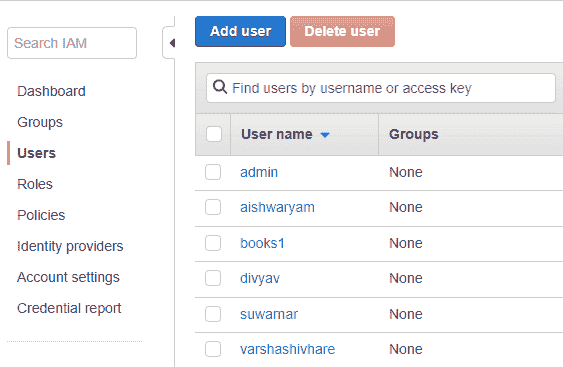
- 现在，设置名称lambda，并选择编程访问复选框:
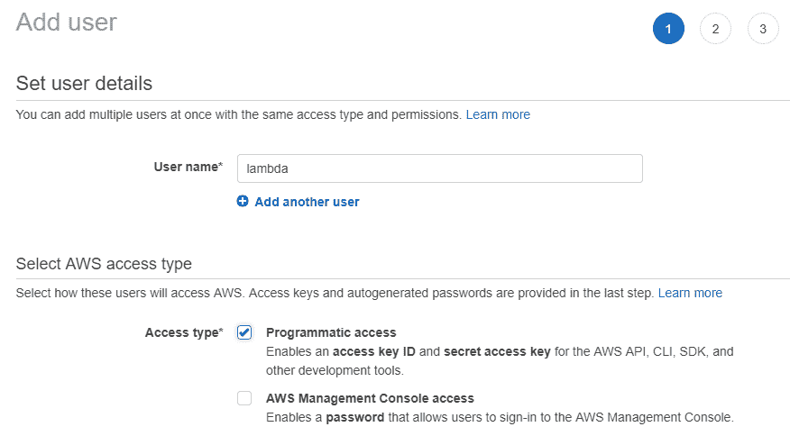
- 接下来，您需要为用户设置使用前面讨论的AWS服务的权限。最简单的方法是选择直接附加现有策略，然后选择AdministratorAccess策略，如下面的屏幕截图所示:
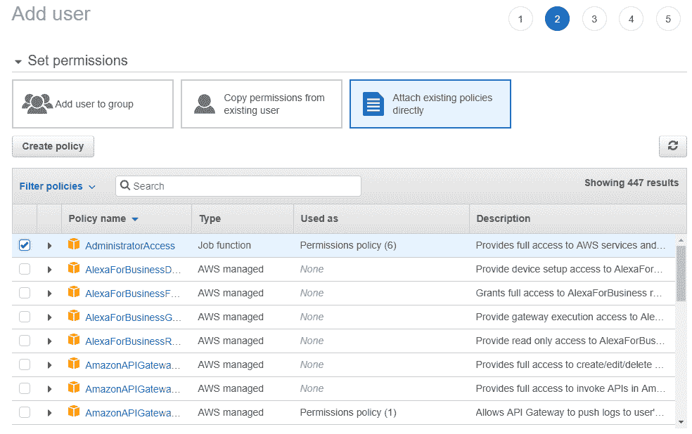
- 最后，你需要确认所有的选择: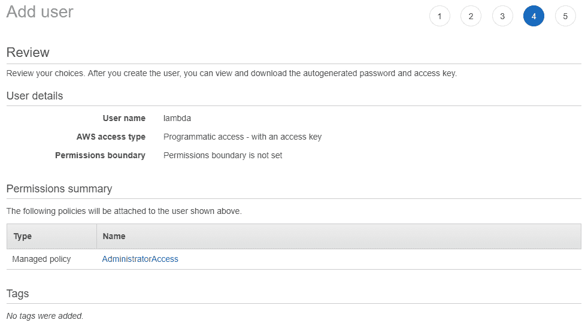
- 它将向我们显示访问密钥ID和秘密访问密钥。您可以从web服务中复制它们，或者通过CSV文件保存它们。稍后在设置无服务器框架时，您将需要这些访问密钥，如下所示:
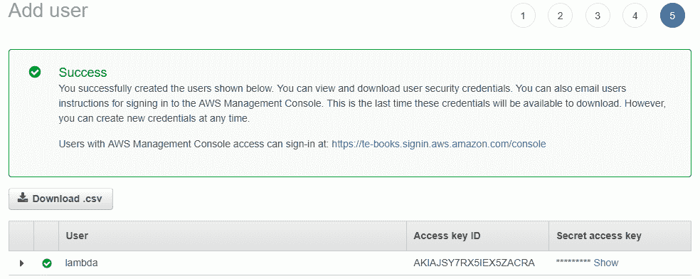
在下一节中，我们将创建一个hello word AWS Lambda函数。
Creating a Hello World AWS Lambda function
从AWS控制台创建Hello World和AWS Lambda有三种主要方法:
- 我们可以从头开始创建一个Lambda。这是创建简单Lambda的最简单的方法。
- 我们可以使用现有的蓝图来创建一个Lambda。AWS有任何基本Lambda的使用目录，您可以使用它从一个Lambda开始，它更接近您想要创建的项目。
- 2018年，AWS增加了无服务器应用程序存储库，用户可以在其中提交他们的Lambda配置。这个库有数百个不同的Lambda包，在AWS Lambda中创建一个Hello World非常有用。
Using the Lambda function
我们将从以下几点讨论使用Lambda函数的方法:
- 可以使用AWS Service Cloud 9中的行内编辑器。如果您不想在本地安装任何东西，而想将所有文件保存在云中，这将非常有帮助。缺点是，使用内联编辑器实现自动化部署，以及处理复杂的副库和包含多个文件的大型项目，可能非常具有挑战性。
- 您可以通过web界面或命令行上传包含库和代码的ZIP文件。这是一个非常简单的过程，您可以轻松地实现自动化。这种方法的主要缺点是包的大小有50 MB的限制。
- 最好也是最流行的上传软件包的方式是通过S3桶。它对包没有50 MB的限制，尽管我们的ZIP库和代码仍然有250 MB的限制。
AWS Lambda code
执行以下步骤创建Hello World代码:
- 使用您的lambda IAM用户登录。转到AWS控制台并选择AWS Lambda服务:
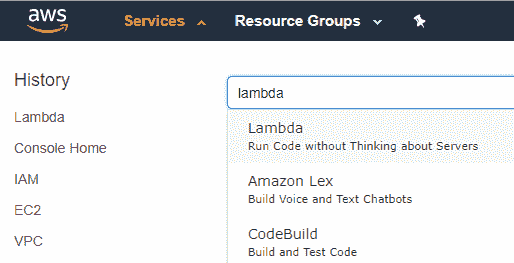
- 点击、创建功能，如下截图所示:
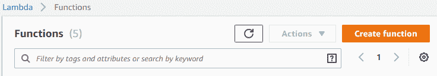
- 从头选择、作者，如下图所示:
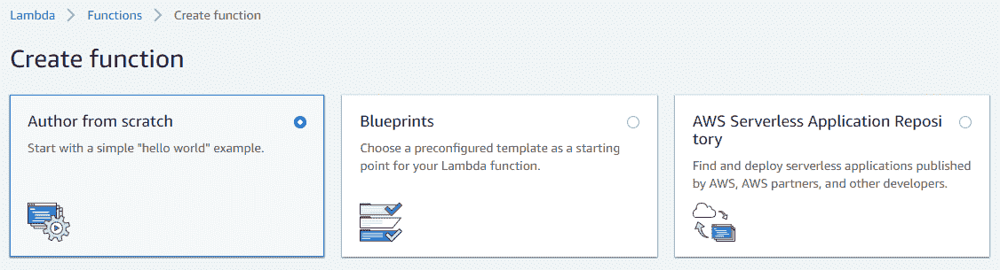
- 我们需要添加名称、运行时和角色。然后，我们需要添加一个角色名，helloLambda。对于策略模板，选择简单微服务权限并单击创建功能按钮，如以下屏幕截图所示:
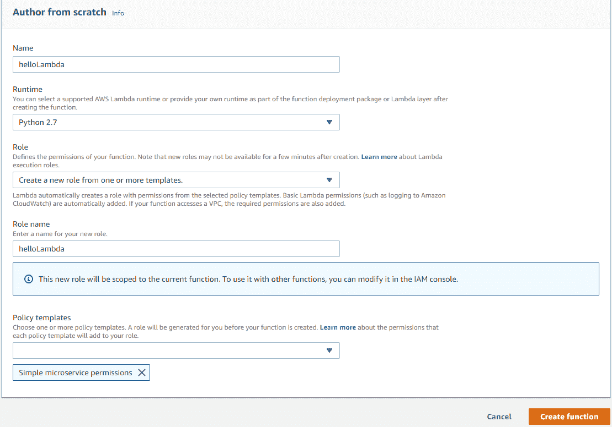
- 最后，我们得到了AWS Lambda的接口。我们得到连接的触发器、代码编辑器和设置:
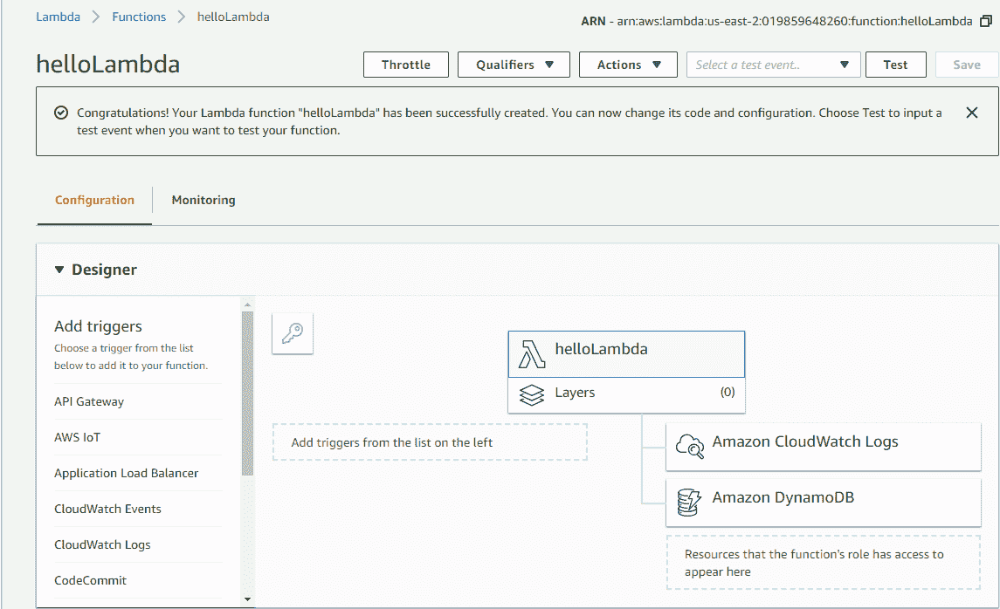
- 您需要配置测试事件并启动您的第一个Lambda函数。对于我们的第一个Lambda函数，您可以创建一个空事件:
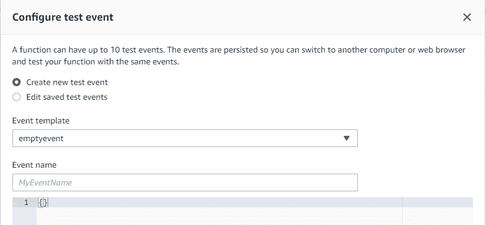
- 编辑代码并保存，您将看到Lambda已经更新:
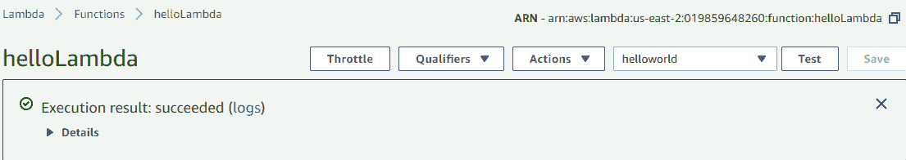
在下一节中，我们将了解无服务器框架。
Introduction to the serverless framework
在前面的章节中，我们学习了部署Lambda函数的不同方法。虽然Lambda包只是带有库和代码的ZIP文件，但是有一些方法可以部署它们，如下所述。生产使用部署需要具备以下特性:
- 首先，无服务器框架应该有一个单一的配置文件，我们可以在其中设置部署的所有选项和参数。这将允许我们在编写用于分别启动每个服务的长脚本时节省时间，并且它将使我们能够保留我们环境的版本。
- 它应该能够创建和附加其他AWS服务来添加到Lambda。由于大多数用例涉及作为更大的基础设施的一部分工作的Lambda，单独部署基础设施的其他部分可能是一个巨大的问题。
- 拥有一个方便的命令行界面非常有帮助，因为这不仅意味着您可以使用单个脚本部署所有内容，还可以设置自动部署。
Features of the serverless framework
无服务器框架有许多有用的特性。它们如下:
- 它是开源的，这意味着无服务器社区有助于构建和维护框架。这允许框架是自由的和最新的。
- 无服务器框架支持不同的公有云平台，如AWS Google call函数和Azure函数。这意味着您不必学习UI如何为提到的服务工作。您可以使用相同的通用UI在另一个服务上部署功能。
- 无服务器框架具有生产级质量，许多公司使用它来部署无服务器基础设施。
- 它有一个插件系统，允许用户为框架创建自定义插件。它允许无服务器具有各种功能；例如，支持阶跃函数。
Installation of the serverless framework
为了安装无服务器框架，我们需要安装以下功能:
无服务器框架的完整安装过程可以在这里找到https://server less . com/framework/docs/providers/AWS/guide/installation。
安装无服务器框架非常容易。我们只需要运行以下命令:
npm install -g serverless
我们可以通过运行以下命令来检查它是否工作:
serverless --version
这将返回已安装的无服务器框架的版本。
Deploying AWS Lambda functions using the serverless framework
我们将从无服务器部署流程开始:
- 我们有Lambda执行的代码和库。如果你直接把你的包作为一个ZIP文件上传，你会看到相同的库和代码。从这个意义上说，通过无服务器框架开始部署现有的Lambdas是非常容易的。
- 我们有一个配置文件，它基本上包含了关于Lambda将如何部署的所有信息。
Configuration file
Lambda配置文件由相同的参数组成，我们在前面的部分已经讨论过了(例如，名称、运行时、内存和超时)。有三个主要区别。
您不仅要设置触发器，还要设置触发器所依赖的服务。您可以设置特定的角色和访问权限。有些访问权限会自动设置，但有些需要您进行配置。最后，您可以设置额外的插件，这些插件将在部署过程中使用。当我们部署步骤函数时，我们将更详细地研究它们。
Deployment process
本节介绍部署过程，该过程将基于我们的配置文件在自定义云形成文件中生成。云形成是一种AWS服务，它允许我们自动部署多种服务。这对于处理部署过程非常方便，但是它的符号可能很难开始。这就是为什么我们使用服务器的配置文件，这是更可读的。接下来，服务框架将库和代码打包在一个包中并上传，然后该包将运行AWS cloud formation服务，以便使用之前生成的文件进行部署。
现在，让我们使用无服务器框架，通过查看可用的文件，继续进行Lambda的实际部署。
有两个文件:index.py和serverless.yml。让我们看看index.py。下面的代码将打印输入事件并返回Hello World消息，如下面的代码片段所示:
def handler(event,context):
print('Log event',event)
return 'Hello world'
下面的代码片段显示了serverless.yml文件:
service: helloworld
frameworkVersion: ">=1.2.0 <2.0.0"
provider:
name: aws
region: us-east-1
runtime: python3.6
memorySize: 128
timeout: 10
functions:
main:
handler: index.handler
在serverless.yml版本中，有函数名、可用资源和区域。helloworld是我们部署的服务的名称。main是函数的名称，index.handler是index.py文件的名称以及它们的文件处理程序中函数的名称。
一个服务可能有不同的功能，这就是它们被分离的原因。在部署它们之前，我们可以在本地运行一个Lambda。这是无服务器框架的一个很好的特性，但是由于操作系统的差异，它可能无法处理复杂的库。我们可以看到，我们打印了一个空日志，并收到了作为输出的Hello World消息:
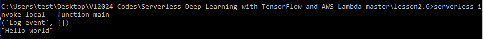
在部署Lambda之前，您需要使用以下命令将您的AWS帐户链接到无服务器服务器:
serverless config credentials --provider aws --key "Your access key" --secret "Your secret access key"
您将使用无服务器框架部署Lambda。此外，即使您有一个简单的程序，无服务器框架也可能需要一些时间来部署服务:
现在，您可以运行Lambda代码并检查输出:
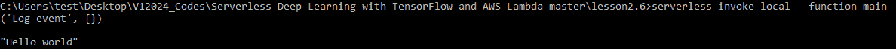
正如你所看到的，它和我们之前收到的一样。有两个很棒的标志，这在使用Lambda时非常有用。第一个标志有助于发送Lambda中的定制事件，因此，模拟来自定制服务的触发器和日志允许您查看当前执行的日志。这个标志日志将允许我们查看日志，数据标志将允许我们发送自定义消息。
Summary
在本章中，我们学习了AWS Lambda函数，以及AWS account入门。我们还学习了如何创建Hello World AWS Lambda函数，以及对无服务器框架和AWS Lambda函数部署的介绍。
在下一章中，我们将开始部署TensorFlow模型，在这里我们将了解更多关于TensorFlow模型以及如何部署它们。